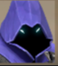
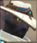

How to get access to the Valorant closed beta:
- Make or sign into a twitch account
- Make a riot games account
- Link said account with said twitch account
- Watch any Valorant gameplay on the twitch platform
- Once you've logged two hours of watch time you'll be entered into
the pool for the day!
- If you have the twitch stream muted, you will not recieve any drops!
On chrome, right click the tab at the top and click "mute site" - Once logged two hours, every additional time watched improves
your chances until you hit 40 hours. At that point close the stream
and wait 24 hours to rejoin the beta pool. - You do not need to be following said streamer or need to be active on stream.
 Raze
Raze Sova
Sova-  Omen
 Jett
Jett Sage
Sage-  Cypher
 Viper
Viper Phoenix
Phoenix Brimstone
Brimstone Breach
Breach
 (Note: I am in the middle of terraforming!)
(Note: I am in the middle of terraforming!) (Note: Trees and flowers do not show up on the in-game map!)
(Note: Trees and flowers do not show up on the in-game map!)